Pentru oamenii tăi
Acces la informație structurată pe etape, lecții video și instrumente de monitorizare, într-un singur loc.
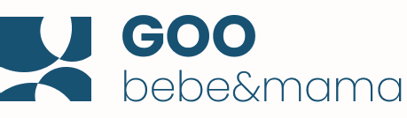
Hai să vorbim ↗WELLBEING PARENTAL PENTRU COMPANII
Program de wellbeing parental
Sprijin pentru părinți.
Grijă pentru echipa ta.
Fiecare copil merită o dezvoltare optimă. Fiecare părinte merită claritate. Oferă angajaților tăi un program complet de wellbeing parental, din sarcină până la 3 ani ai copilului.
Solicită oferta pentru compania ta ↗↓ Descarcă prezentarea PDFFamily Friendly Employer · GOO BEBE × Edenred Benefit
UN BENEFICIU CARE AJUNGE ACASĂ
Între întrebările despre sarcină, nopțile fragmentate și revenirea la serviciu, părinții au nevoie de repere. Family Friendly Employer aduce educația parentală și sprijinul pentru familie în programul de wellbeing al organizației.
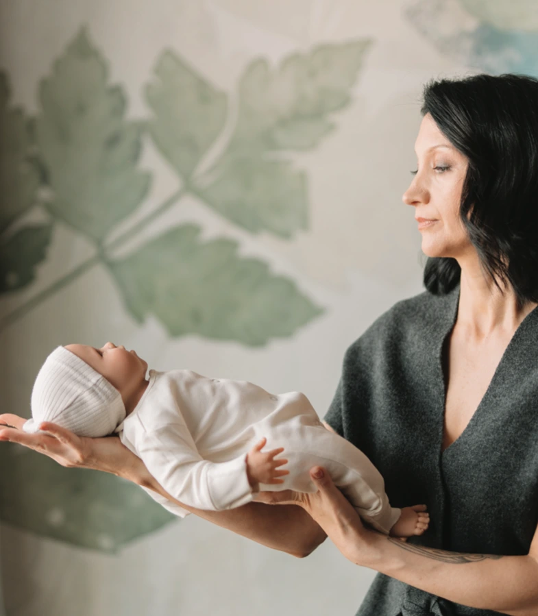
„Ideea de la care pornește GOO BEBE.
Acces la informație structurată pe etape, lecții video și instrumente de monitorizare, într-un singur loc.
Un mod concret de a arăta că sprijinul pentru familie face parte din experiența angajaților.
Un program cu lansare, materiale de comunicare și raport anual de activitate.
ACEEAȘI GRIJĂ. ETAPE DIFERITE.
Pentru angajate însărcinate, viitori tați și părinți cu copii până la 3 ani. Pentru că parentingul este o responsabilitate împărtășită.
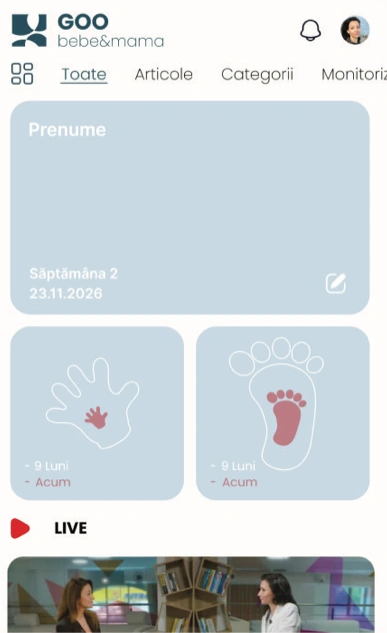
Un feed dedicat monitorizării sarcinii și ghidării săptămânale, cu educație contextuală pentru fiecare etapă.
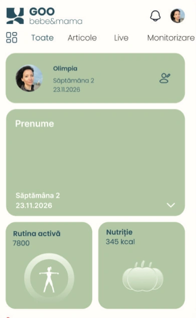
Un spațiu dedicat stării și echilibrului mamei: emoții, sănătate, stil de viață și adaptarea la maternitate.
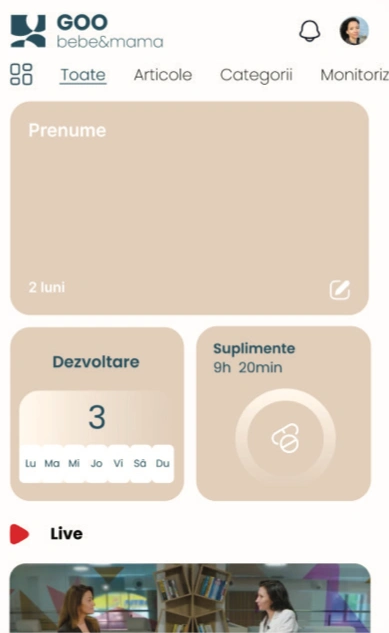
Informație despre creșterea și dezvoltarea copilului, lecții video pe ariile esențiale și instrumente de monitorizare.
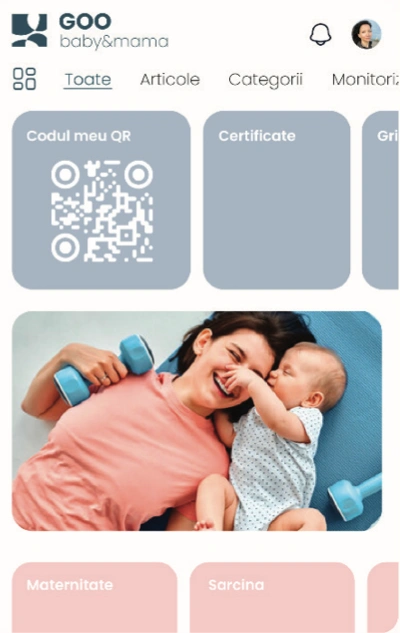
Oferte, servicii și recomandări ale partenerilor GOO BEBE, potrivite pentru sarcină și primii ani ai copilului.
O PRIVIRE ÎN INTERIORUL APLICAȚIEI
Lecții video și resurse educaționale care aduc claritate în momentele importante. De la pregătirea pentru naștere, la relația cu copilul și dezvoltarea lui.
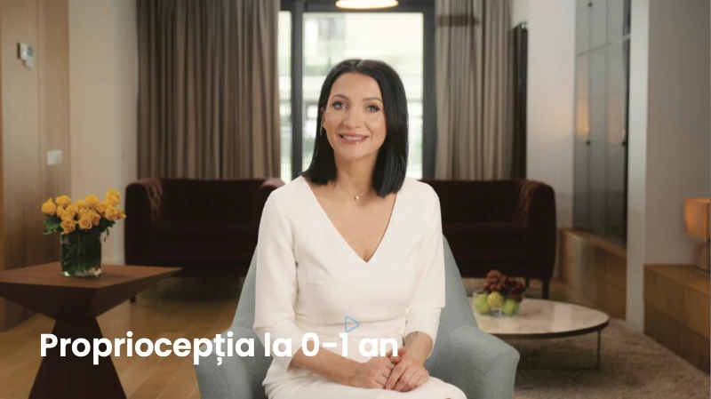
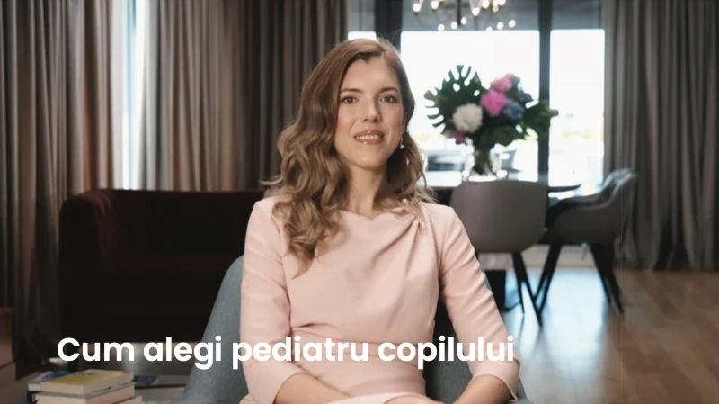
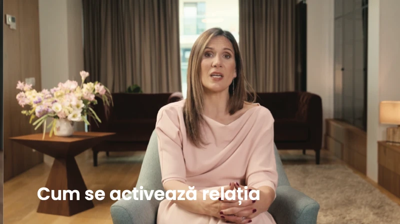
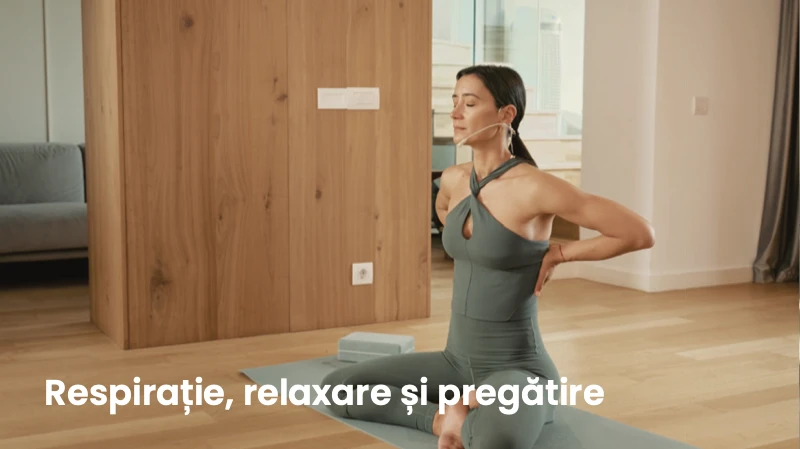
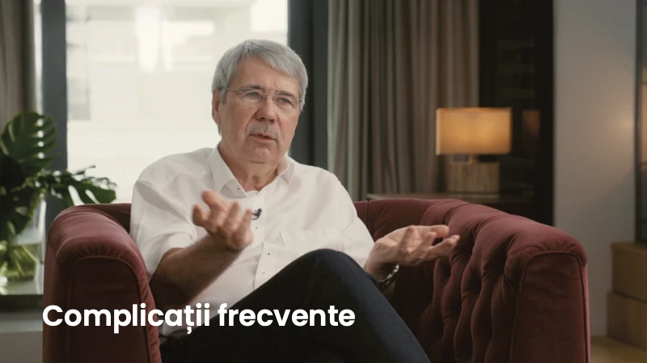
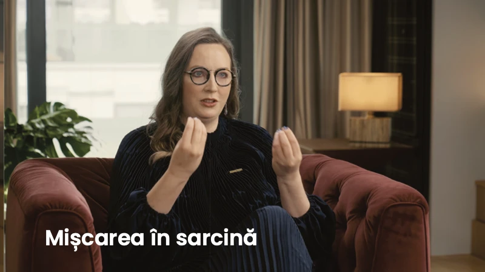
Exemple de lecții din prezentarea GOO BEBE. Conținutul video este disponibil în aplicație.
BACK TO WORK
Programul video Back to Work din aplicație îi ajută pe părinți să pregătească revenirea după concediul parental, cu repere practice pentru noua rutină a familiei.
Include sprijinul pentru revenire în programul tău ↗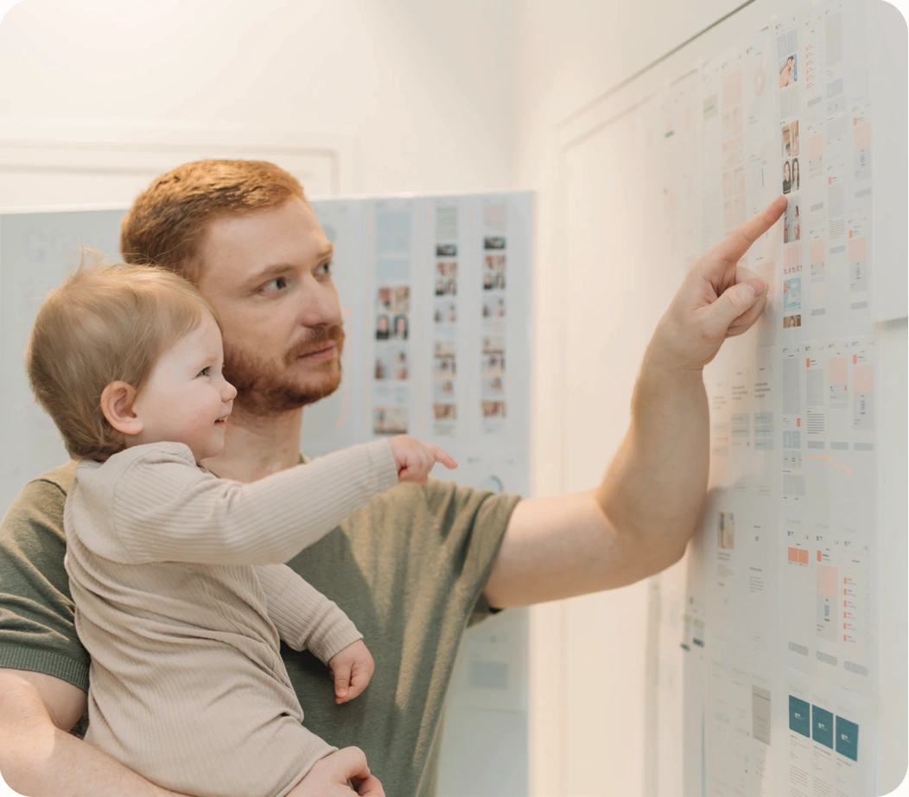
ÎNTREBĂRI REALE. REPERE PRACTICE.
Un nou capitol, pentru întreaga familie.
DE CE SĂ ADAUGI ACEST BENEFICIU
Din sarcină până la revenirea din concediul parental, oamenii tăi traversează schimbări care le ating și viața profesională. Un program de wellbeing relevant recunoaște această etapă și le oferă repere concrete, înainte ca întrebările să devină copleșitoare.
Când compania este alături de angajat într-un moment important pentru familia lui, grija devine o experiență personală. Un punct de sprijin pentru relația de încredere și loialitate pe termen lung.
Sprijin înainte, în timpul și după concediul parental. Back to Work aduce repere pentru noua rutină a familiei și pregătirea revenirii la serviciu.
Family Friendly Employer, kitul de comunicare și certificatul de partener dau echipei HR instrumente concrete pentru a comunica sprijinul oferit părinților.
VEZI CUM FUNCȚIONEAZĂ
Alege o etapă din parcursul unui angajat.
NEVOIA ANGAJATULUI
Informații contradictorii, schimbări personale și pregătirea pentru venirea copilului.
SPRIJINUL GOO BEBE
Educație contextuală, lecții video și instrumente de monitorizare, organizate pe etapa sarcinii.
CE POATE FACE HR
Include viitoarele mame și viitorii tați în program și comunică beneficiul din timp, prin materialele dedicate.
Mesajul pentru angajat: „Compania este alături de mine și de familia mea.”
UN BENEFICIU UȘOR DE EXPLICAT ÎN INTERIOR
Un program anual pentru un grup clar de angajați: viitoare mame, viitori tați și părinți cu copii până la 3 ani. Cu acces digital, lansare în companie, comunicare și un raport anual de activitate.
Transformă grija pentru familie într-un beneficiu concret.
Ia prezentarea la următoarea discuție despre wellbeing și experiența angajaților.
O CONTRIBUȚIE MICĂ. UN SPRIJIN CARE CONTEAZĂ.
Într-un scenariu de planificare, aproximativ 6% dintre angajați pot fi viitori părinți sau părinți cu copii până la 3 ani. Un beneficiu pentru un grup precis, într-o etapă în care sprijinul companiei poate însemna mult.
REPERUL DIN PREZENTARE
+1,25%O alocare ilustrativă de 2.500 lei la un buget actual anual de beneficii prin Edenred de 200.000 lei. O contribuție redusă, pentru un sprijin relevant în viața părinților.
PROPORȚIA ÎN BUGETUL EDENRED
Buget anual cu alocarea GOO BEBE: 202.500 lei
Exemplu de buget, nu ofertă comercială. Ponderea de aproximativ 6% este o estimare a grupului eligibil, nu baza unui calcul automat de cost. Alocarea finală, implementarea și taxele se confirmă în oferta companiei.
Folosește relația existentă cu Edenred pentru a discuta includerea GOO BEBE în pachetul de beneficii. Ai un punct de contact familiar și poți evita reluarea de la zero a procesului de înrolare a unui furnizor separat, în funcție de cadrul contractual și procedurile companiei tale.
DE LA BENEFICIU LA EXPERIENȚĂ
Prezentarea programului, workshop cu Olimpia Mesa despre momentele importante în dezvoltarea copilului și sesiune de întrebări și răspunsuri.
Abonamente GOO PLUS: conținut premium, cursuri video, ghiduri, instrumente și acces la resursele aplicației.
Kit pentru HR: email de lansare, afișe, bannere digitale, materiale pentru employer branding și insigna programului.
Raport cu numărul angajaților înscriși și rezumatul activității programului pe parcursul anului.
Insigna Family Friendly Employer și certificatul de partener GOO BEBE pot susține comunicarea despre implicarea companiei în sprijinirea părinților. Condițiile de utilizare se stabilesc în parteneriat.
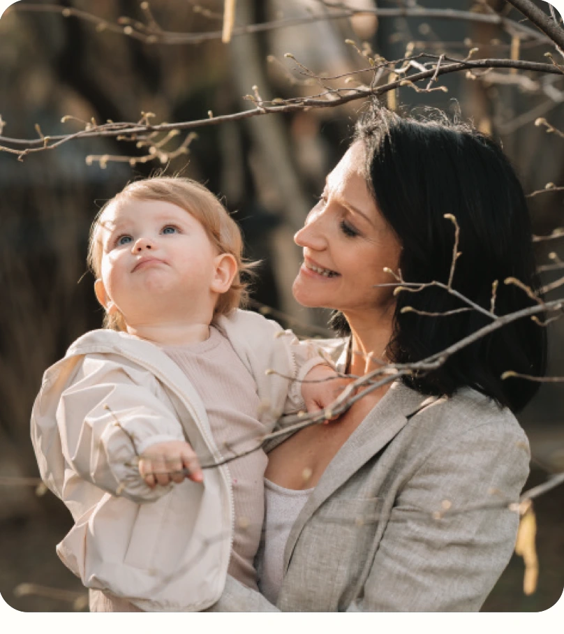
ARHITECTURA EDUCAȚIONALĂ
Olimpia Mesa, fondatoarea GOO bebe & mama, coordonează arhitectura educațională a aplicației. Fiecare resursă este integrată într-un parcurs clar și coerent, potrivit etapei în care se află părintele.
Programul corporate aduce această experiență în companie, alături de workshopul de lansare, sesiunea de întrebări și răspunsuri și materialele dedicate echipei HR.
PE SCURT, PENTRU HR
Angajate însărcinate, angajați care se pregătesc să devină tați și părinți cu copii până la 3 ani. Programul susține întreaga familie.
Da. Companiile pot alege doar abonamente sau programul complet, cu servicii de implementare și comunicare. Configurația se stabilește împreună.
Stabilim beneficiarii, pregătim lansarea și comunicarea internă, apoi activăm accesul și urmărim activitatea programului. Serviciile și calendarul sunt incluse în oferta agreată.
Solicită o ofertă în funcție de numărul beneficiarilor și serviciile dorite. Vei primi separat costurile abonamentelor, implementării și condițiile comerciale aplicabile.
Este programul de wellbeing parental GOO BEBE, însoțit de materiale care comunică participarea companiei. Insigna programului nu este prezentată ca o acreditare independentă.
FAMILY FRIENDLY EMPLOYER · GOO BEBE × EDENRED BENEFIT
Adu wellbeingul parental în compania ta. Solicită propunerea pentru echipă sau descarcă prezentarea și du conversația mai departe, către colegi și conducere.
mihai.sirbu@ubris.com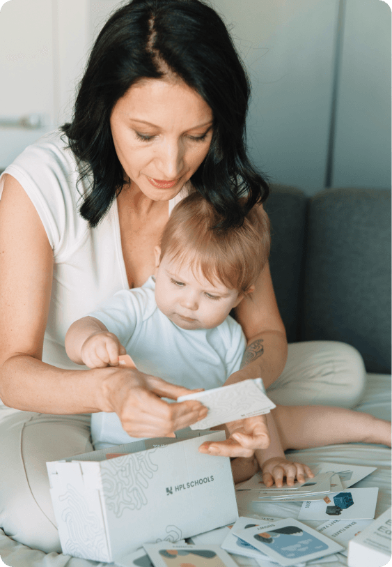